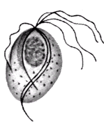

| Trichomonas vaginalis | |
|
 |
T. vaginalis is the causative agent of human trichomoniasis. Infection is acquired primarily through direct sexual contact although neonatal infection has also been reported. The trophozoites colonize and parasites in vagina or prostate of infected hosts. As the parasite multiplies, it attaches to the squamous epithelium in the genital tract. Infection in males is usually asymptomatic while the spectrum of clinical trichomoniasis in women ranges from the chronic carrier to acute inflammation of the vagina. Recent reports suggested that trichomoniasis is also associated with adverse pregnancy outcomes, increased susceptibility to HIV and the risk of cervical neoplasia. The annual incidence of human trichomoniasis is more than 170 million cases worldwide. |
| 科學大解碼: 陰道鞭毛蟲 [video] | Wikipedia on T. vaginalis | |
|
CDC Fact sheet on Trichomonas infection
| CDC STD information: Trichomoniasis |
|
| 19th Biennial Meeting of the
International Society for Sexually Transmitted Diseases Research 1. Trichomoniasis: Why is It the Neglected STD? by M. Hobbs 2. A Trich-y parasite: genomics, population genetics and evolution of Trichomonas vaginalis by Jane Carlton |
|
| Tritrichomonas foetus | |
|
T. foetus
is the causative agent of bovine trichomoniasis. A cow
receives T. foetus when bred by an infected bull. The
protozoan invades the fetal membrane, usually causing early death
and reabsorption or absorption of the developing foetus. As infected
cows begin ovulatory cycle after aborting, they transmit the
protozoan to uninfected bulls that breed them. Infection cause
significant economic losses in the free-ranging cattle industry
around the world. A recent study on the epidemiology of T. foetus
in beef bull populations in Florida revealed that an overall
prevalence of 6.0% for infected bulls. Accumulating evidences indicated that in addition to bovine trichomoniasis, T. foetus is also the causative agent of feline large bowel disease. Infected domestic cats usually have colitis and chronic, foul-smelling persistent diarrhea. Feline trichomoniasis is prevalent among cattery cats where transmission via the fecal-oral route is suspected. |
|
| Wikipedia on T. foetus | |
| Pentatrichomonas hominis | |
| P. hominis is considered to be a commensal protozoan of the vertebrate digestive tract. Infection is usually asymptomatic in healthy and immunocompotent persons. However, under certain unbalanced conditions in the digestive tract P. hominis cause persistent diarrhea, dysentery-like disturbance, colitis and appendicitis. On the basis of light microscopic examination of feces, some investigators presumptively identified P. hominis is also the causative agent of feline and canine diarrhea. | |
| Wikipedia on P. hominis | |